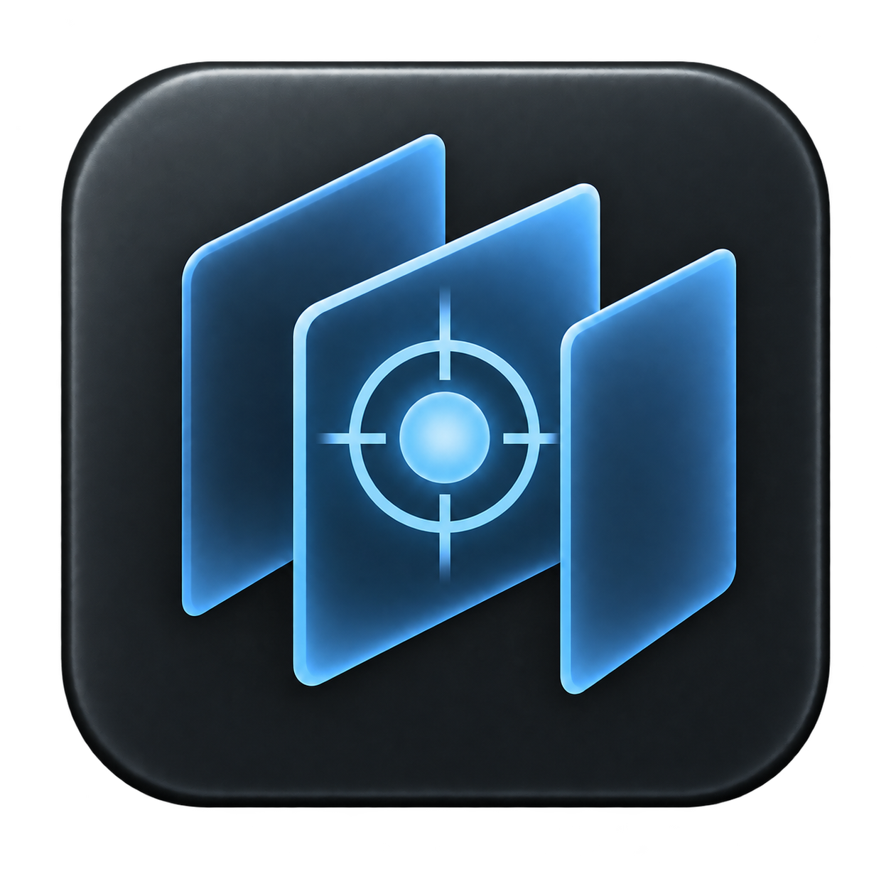

DICOM RT
macOS development
DICOM
RT
Tags
PNG
ZIP
⚙
DICOM-Datei öffnen, um den Plan zu betrachten.
◩
▱
▤
▥
▦ 2 × 2
◇ 3D
No images
▣
ISO
i
Fields
Fit
Native
Axial
Coronal
Sagittal
DICOM
Weichteil
Lunge
Knochen
Gehirn
W
L
Scrollen: Schicht · ⌘ Scrollen: Zoom
Field
▶ Play
DRR
Wähle eine DICOM-Datei.
Slice
Schließen